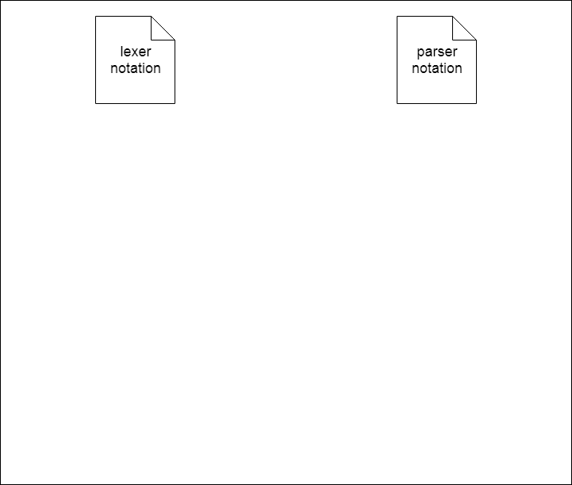
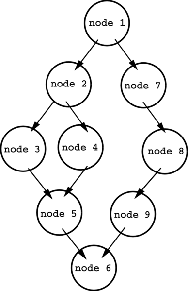
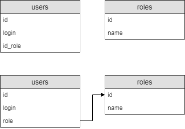

Introduction
In the modern information technology industry, databases play a major role in building automated systems of any complexity and scale. Design quality and building, as well as the efficiency of using the database directly affects the overall functioning of the system or software complex.
Each database is defined by a structure that is nothing more than a set of instructions on SQL language, or rather one of its dialects. Thus, the process of analyzing the quality of the base structure data is to analyze its SQL code.
Already there are systems that perform this task for other programming languages, but it is the creation of an automated system for analyzing the quality of the database structure (SFAD) developers and administrators to significantly increase the efficiency of their work and on time respond to errors at the stage of building databases.
Relevance
The process of analyzing the quality of the database structure mentioned earlier is inherently static. SQL code analysis in the modern world of software development, static analysis is the key to the success of the entire project. Proper and timely embedding of this stage in the process Writing code can significantly save both time and financial resources. Considering, how widely, for the moment, are SQL databases being used, a tool that allows comprehensively assess the quality and coherence of written SQL-code, can be extremely in demand. Important note that in proportion to the growth of the software system, the number of errors that can be allowed in writing source code, therefore in the development of databases, where you can often to meet large software systems, static analysis is particularly relevant.
Goals and objectives of the research
The purpose of this work is to study and select the optimal methods of SQL-code static analysis allowing to assess the quality of database structure. According to the results work on the system should be solved the problem of allowing the developer to embed it in the process of describing and building the database structure and getting the analysis results in the form of a list vulnerabilities, bugs or recommendations for improvement.
During the work on the project it is planned to hold: domain analysis and problem statement; analysis of existing solutions to this problem; analysis of methods for preliminary preparation of code for subsequent processing, review and selection of appropriate tools for this stage; determination of database structure criteria for analysis; analysis of the processing methods of the syntax tree obtained at the stage of preparation of the code [10]; review of existing methods of static analysis, the choice of optimal solutions for the task and their application; introduction of the developed system into the database building process and its practical application.
The object of the research is the analysis of the quality of the database structure. The subject of research is the static analysis of the database SQL-code.Analysis of existing world solutions
From existing systems for automated analysis of relational database structures can be distinguished product Microsoft Total Access Analyzer designed for Microsoft Office Access DBMS [6].
This software system works as an additional add-on for Microsoft Access and: forms detailed and detailed documentation on the database being analyzed, with various references to its objects or their SQL code; conducts a detailed analysis of objects and relationships between them, identifying errors of various types, as well as possible means to eliminate them; assesses performance losses and offers solutions to detected problems; creates diagrams of data streams and objects, allowing a more visual representation of the database structure.
Also worth noting is SonarSource with its systems for analyzing SQL-code, in particular for TSQL and PL / SQL dialects [7]. This company has in its asset the development of code analyzers for most of the currently popular programming languages. They all correspond to a single interface. applications and used in the SonarQube web application, which allows you to manipulate all nuances of static analysis: set or change the rules and criteria of analysis, view analysis results categorized by categories and obtain quantitative quality assessments parsed code.
In the context of Oracle DBMS, Visual Expert should be mentioned. This software solution is supplied in the form both desktop and server applications. Its main focus is the visualization components of the database structure, easy navigation and search for them. But in the list of functional The product also claims static analysis of PL / SQL code.
Analysis of existing local solutions
Among the projects of graduates of DonNTU in the field of analysis and optimization of work with databases is highlight the master's work of Zaslavsky V.A. "System optimization client requests to servers distributed database "[9].
This paper is not about the static structure of the database, but about the dynamic component of the work. with her - client requests. The system developed here uses the "ant algorithm" to search optimal query plan, thereby optimizing the original query.
A distinctive feature of the project is that the author focuses on working with distributed databases and accordingly distributed queries. Emphasis on optimization done on network costs, not on relational database features and query. In part, this it can be considered a disadvantage, but in general it is the specifics of the project and the research conducted.
Basic concepts and algorithm of the system
In order to more fully reveal the essence of the automated quality analysis system database structure, it is necessary to give definitions to the basic concepts that are encountered at one stage or another the work of this software complex.
Static code analysis is the process of identifying logical and stylistic errors. in the source code. Static analysis to some extent is analogous to the code review process (code review), but in automated form. Usually in practice both approaches are used, since each has a number of advantages [3].
It should be noted that the code analysis process itself is the final stage of the chain of successive operations. It is based on lexical and syntactic parsing procedures, the implementation of which depends on the specifics of the text, in this case, the program code.
Lexical analysis or parsing is the process of analyzing and recognizing certain elements or their groups (tokens) in the input set or sequence of characters, for their subsequent identification and allocation of tokens (tokenization). In the general case in the lexical process analysis of input data is a stream of characters, and output - a set of classified tokens (classification may have different levels of complexity) [1].
The syntax analysis is the process of processing a set of tokens (in general, tokens) a certain formal language with its grammar. This process is performed syntactically. analyzer (parser), which accepts the input of the work of the previous lexical analysis. The output of the parse is a syntax tree or tree parse, which is the entire syntactic structure of the analyzed sequence characters [2].
A bunch of lexical and parser is used in many areas. programming and not only writing them manually is quite time-consuming process therefore, in many software products, compilers, interpreters, etc. are used analyzer generators [8].
Generators of lexical and syntactic analyzers take as input lexical and syntactic the structure of the language in some formal representation, at the output we get the source code of the lexer and a parser in one of the programming languages (the language depends on the selected generator).
As you can see, the analysis of the SQL code of the database structure consists of several consecutive transformations of the source code and its further processing. The full algorithm of the SADB is shown in figure 1.

Figure 1 - The full algorithm of the SADB(animation: 5 frames, repetition cycles - 5, time between frames - 0.8 s., size 38 Kb)
Techniques and methodologies of static analysis
One of the most important techniques of static code analysis is data flow analysis. This is a method gathering information about a possible set of calculated values and options for their use in various points of the program [4]. The data obtained from this process is often used when program optimization. This process is possible through the construction and analysis of the control flow graph (CFG) (fig. 2.).

Figure 2 - Control flow graph
The CFG is a representation using the graph of all the paths of the program. In the flow graph control, each node represents a base unit, that is, a rectilinear piece of code without any transitions. Directed edges are used to represent links and transitions between basic blocks in the control flow. In most notations, there are two specially marked blocks: input the block through which the control enters the flow graph, and the output block through which the entire control flow [5].
Analyzing such a structure allows determining the places for calculating the values of certain variables identify the code blocks in which these values are used. Thus, it is possible to trace the path variables and their values according to the program and identify vulnerabilities or opportunities for optimization.
Also worth noting is the technique of matching pattern matching. She is in compiling a list of certain anti-patterns of the use of certain language constructions and identifying in the source code fragments corresponding to them.
For the SQL language in the context of describing the structure of the database, you can give an example of identifying stylistic and logical inconsistencies by pattern matching. In figure 3 There are two options for describing tables. In the first case, a logical error was made, since the field the “users” table implicitly refers to the “roles” table - the foreign key is missing. In the second case a stylistic error was made because the foreign key was created, but the field name was not set appropriately standards.

Figure 3 - Errors in database structure
Similarly, any formalized rule can be analyzed. Based on the specification SQL and recommendations made by the developer community can form the necessary list of these rules, for the effective operation of the automated system of static analysis.
Conclusion
In this paper, the basic concepts and subject of the master's project were described.
An analysis was made of existing solutions, following which we can conclude that moment of universal decisions on the analysis of the quality of the database structure in the context of any dialect SQL is not.
Were also considered techniques of static code analysis, which will be used in the development of SFAD. The list of applied techniques will need to be expanded to cover aspects of the analysis, missing in existing systems.
According to the results of the work carried out, it is planned to continue research and practical application achievements.
List of sources
1. Хантер Р. / Основные концепции компиляторов / 2002г. – 256с.
2. А. Ахо, Дж. Ульман. / Теория синтаксического анализа, перевода и компиляции / 1978г. – 614с.
3. William B. / Database Code Analysis / Электронный ресурс – Режим доступа: https://www.red-gate.com/simple-talk/sql/database-devops-sql/database-code-analysis/
4. Khedker U., Sanyal A., Sathe B. / Data Flow Analysis: Theory and Practic / 2009г. – 328с.
5. Kam, John B.; Ullman, Jeffrey / Global Data Flow Analysis and Iterative Algorithms / Электронный ресурс – Режим доступа: http://rsim.cs.uiuc.edu/arch/qual_papers/compilers/kam.pdf
6. Microsoft Total Access Analyzer / Электронный ресурс – Режим доступа: http://masters.donntu.org/2016/fknt/safonov/diss/index.htm
7. Sonarsource / Электронный ресурс – Режим доступа: https://www.sonarsource.com/
8. Генераторы лексических и синтаксических анализаторов / Электронный ресурс – Режим доступа: http://www.kulichki.net/kit/tools/lexparse.html
9. Заславский В.А. / Система оптимизации клиентских запросов к серверам распределённой базы данных / Электронный ресурс – Режим доступа: http://masters.donntu.org/2011/fknt/zaslavskiy/diss/index.htm
10. Введение в теорию трансляторов / Электронный ресурс – Режим доступа: http://bourabai.kz/tpoi/compilers.htm